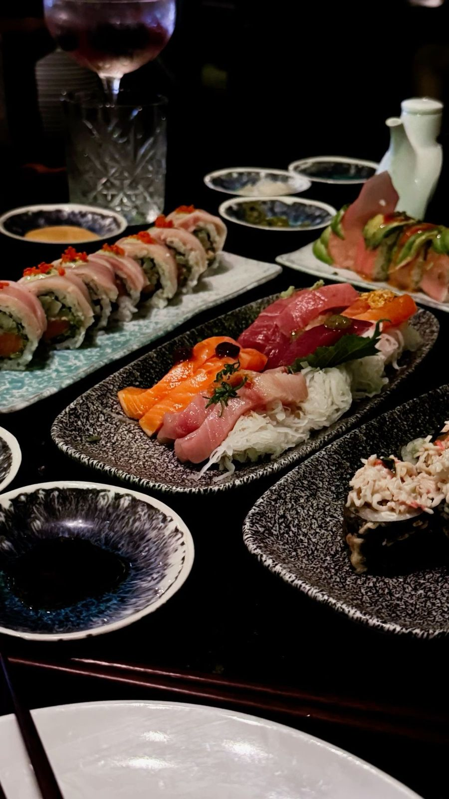
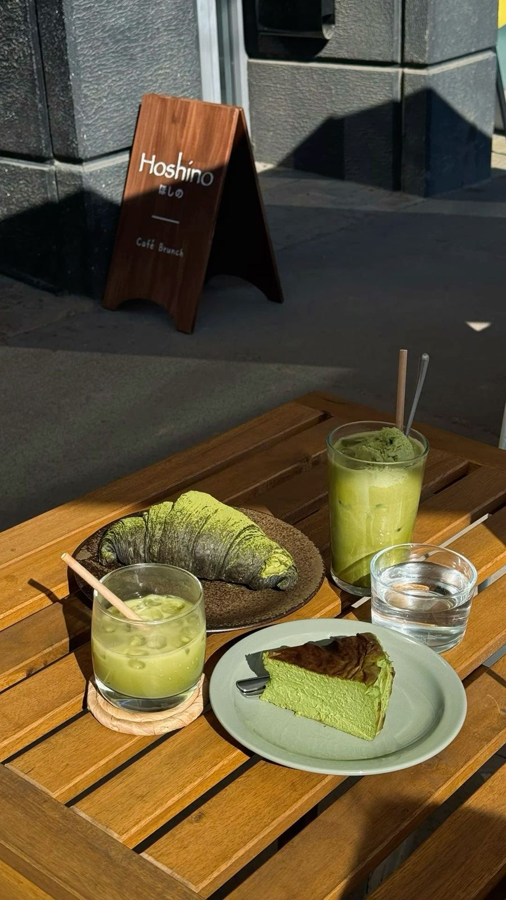
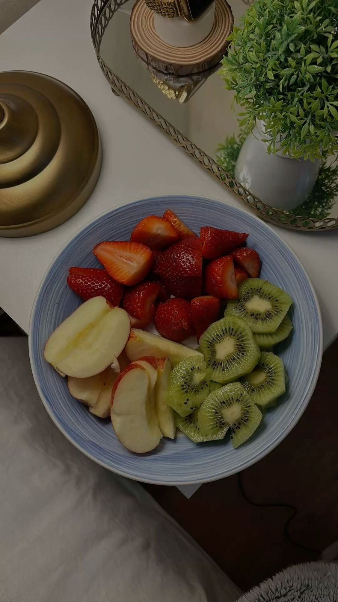

Chapter I
Palate

The Art of Sushi
Sebuah dialog antara kesegaran dan seni yang minimalis.

Ceremonial Matcha
Ritual kecil yang mendefinisikan ketenangan di tengah hari.

Nature's Palette
Kemewahan murni yang berasal langsung dari alam.